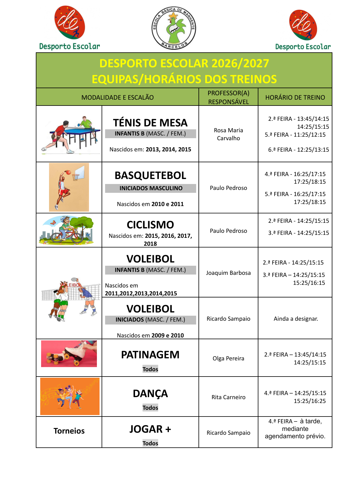

Ofertas Extracurriculares 2026/2027

Desporto Escolar 2026/2027
Ténis de Mesa – Infantis B (Masculino/Feminino)
Nascidos em 2013, 2014 e 2015 · Professora responsável: Rosa Maria Carvalho.
2.ª feira: 13:45–14:15 e 14:25–15:15 · 5.ª feira: 11:25–12:15 · 6.ª feira: 12:25–13:15.
Basquetebol – Iniciados Masculino
Nascidos em 2010 e 2011 · Professor responsável: Paulo Pedroso.
4.ª feira: 16:25–17:15 e 17:25–18:15 · 5.ª feira: 16:25–17:15 e 17:25–18:15.
Ciclismo
Nascidos em 2015, 2016, 2017 e 2018 · Professor responsável: Paulo Pedroso.
2.ª e 3.ª feira: 14:25–15:15.
Voleibol – Infantis B (Masculino/Feminino)
Nascidos em 2011, 2012, 2013, 2014 e 2015 · Professor responsável: Joaquim Barbosa.
2.ª feira: 14:25–15:15 · 3.ª feira: 14:25–15:15 e 15:25–16:15.
Voleibol – Iniciados (Masculino/Feminino)
Nascidos em 2009 e 2010 · Professor responsável: Ricardo Sampaio.
Horário: ainda a designar.
Patinagem – Todos
Professora responsável: Olga Pereira.
2.ª feira: 13:45–14:15 e 14:25–15:15.
Dança – Todos
Professora responsável: Rita Carneiro.
4.ª feira: 14:25–15:15 e 15:25–16:25.
Torneios JOGAR + – Todos
Professor responsável: Ricardo Sampaio.
4.ª feira à tarde, mediante agendamento prévio.